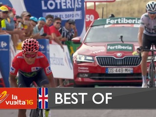

La Vuelta 2017 : D-3

Nîmes buzzes with activity for La Vuelta Race headquarters and the press room for the 72nd La Vuelta opened at the Musée de la Romanité, on the iconic place des Arènes at Nîmes. 1,400 media representatives, 198 riders and 300 team staff members, 250 officials and 200 law enforcement officers are expected to go through the accreditation process. Media center has been inaugurated this Wednesday with Jean-Paul Fournier, Senator-mayor of Nîmes, Julien...
Read more More newsLa Vuelta 2017 route
La Vuelta 2017
Running from Saturday August 19th to Sunday September 10th 2017, the Vuelta will be made up of 21 stages and will cover a total distance of 3,324.1 kilometres.
- 5 flat stages and 1 flat with high-altitude finales stage
- 8 hill stages
- 5 mountain stages
- 1 individual time trial stage
- 1 team time trial stage
Distinctive aspects of the race
- 40.2 km individual time trial
- 13.7 km team time trial
- 50 summits
- 2 rest days
The race in videos
12
- The 2017 route
- Best of - La Vuelta a España 2016


Official Timekeeper
Jersey wearers 2016
- red jerseyQUINTANA N.MOV
- green jerseyFELLINE F.TFS
- combined jerseyQUINTANA N.MOV
- teamBMC RACING .BMC
Subscribe
Receive exclusive news about the Vuelta